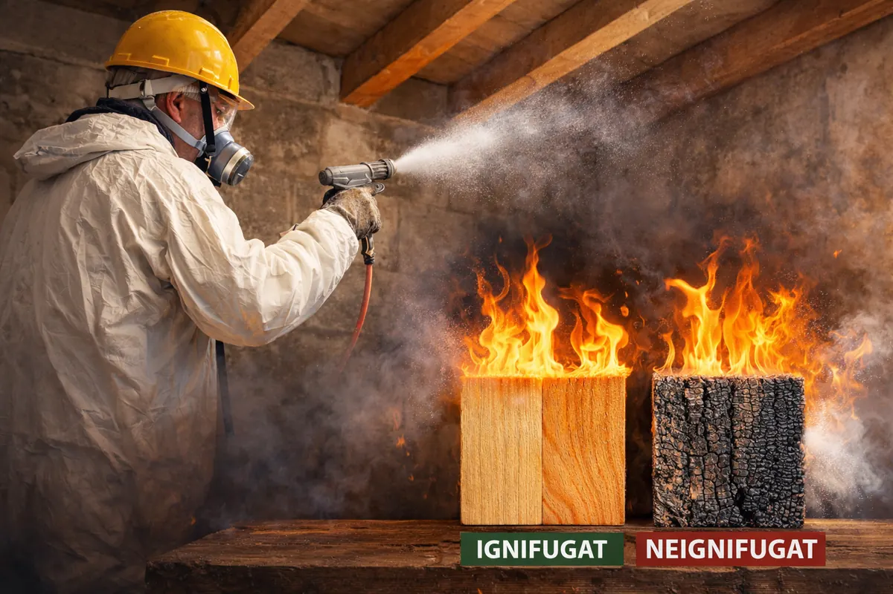
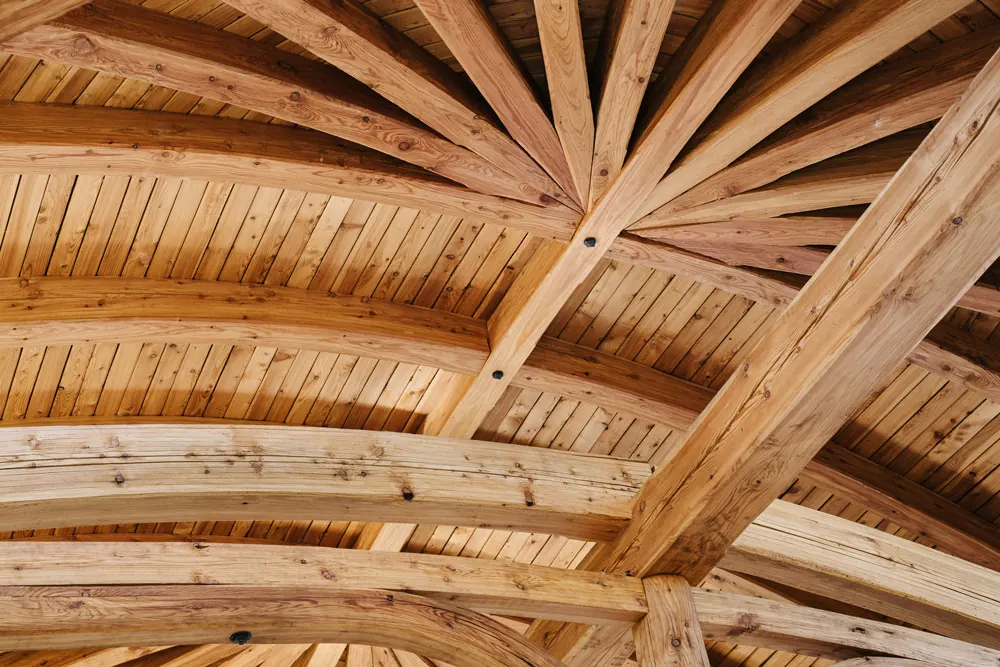

- Acasă
- Ignifugare lemn
Ignifugare lemn și șarpante în Brăila și Sud-Est
Tratăm la foc toate tipurile de elemente din lemn folosite în construcții rezidențiale, comerciale și în instituții publice.
Ce elemente din lemn ignifugăm
- șarpante: căpriori, pane, cosoroabe, astereală
- grinzi și planșee din lemn
- structuri portante și case pe structură din lemn
- lambriuri, placări și elemente din derivate de lemn (OSB, PAL, placaj)
- pergole, foișoare și terase la pensiuni, restaurante și complexuri
- poduri, mansarde și elemente din lemn în instituții publice și biserici
De ce se ignifughează lemnul
Lemnul este un material combustibil. Tratamentul ignifug nu împiedică total aprinderea, dar întârzie propagarea focului și reduce viteza de ardere. Asta înseamnă timp în plus pentru evacuarea oamenilor și pentru intervenția pompierilor.
Pentru multe clădiri, ignifugarea elementelor din lemn este și o cerință a normelor de securitate la incendiu, verificată la obținerea avizului sau autorizației ISU.
Cum se face ignifugarea lemnului
Înainte de tratarea completă, prelevăm mostre din lemnul care va fi ignifugat. Mostrele sunt tratate și trimise la un laborator autorizat. Pe baza rezultatelor, aplicăm soluția ignifugă pe toată construcția, de regulă prin pulverizare, folosind produse omologate.
Șarpanta se tratează ideal înainte de montarea învelitorii, izolației sau a plăcilor de gips-carton, când lemnul este accesibil pe toate fețele. Putem trata și construcții existente, unde lemnul este încă accesibil.


Aveți o șarpantă de ignifugat?
Spuneți-ne localitatea, suprafața aproximativă a acoperișului și dacă lemnul este încă la vedere. Revenim cu o ofertă.
- Telefon0740 899 950
- Emailignifugbraila@yahoo.com
- ContactGheorghiță Petrică
- SediuStr. Frumoasa nr. 77, Brăila